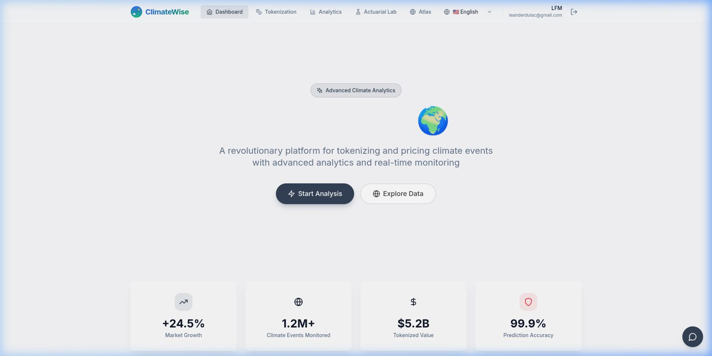
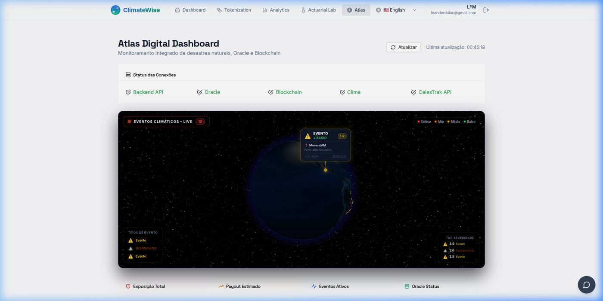
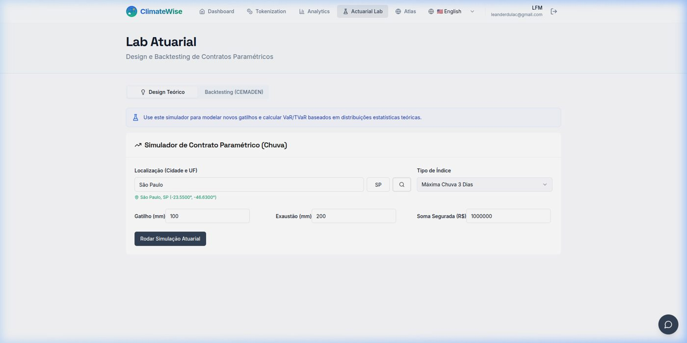
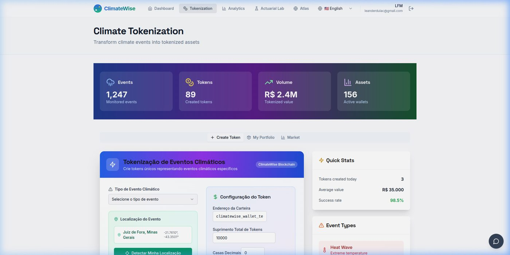

Motor atuarial FIMCE
Ensemble de ML e modelos físicos para precificar risco climático e detectar eventos extremos.
Seguro climático paramétrico com IA: o motor atuarial FIMCE combina machine learning e física para detectar secas, enchentes e ondas de calor e acionar pagamentos automáticos ao produtor rural.
Ensemble de ML e modelos físicos para precificar risco climático e detectar eventos extremos.
Dados de NOAA, INMET, Embrapa, Open-Meteo e satélite, com consenso 2 de 3 e prova verificável.
O gatilho climático confirmado dispara o pagamento, sem vistoria e sem espera.
Contrato ClimatePolicy na Base L2 (hoje em testnet), com rastreabilidade de ponta a ponta.
LSTM bidirecional com atenção multi-head para previsão climática e de preços de commodities, servida em GPU. Com otimização TensorRT, estimamos inferência dezenas de vezes mais rápida e custo de nuvem significativamente menor (valores estimados, em validação).




Planejamos o primeiro piloto em Monte Alegre, em parceria com a cooperativa de crédito agrícola local, levando proteção paramétrica a produtores cooperados.
Incubada pelo IA Instituto (Inosu Acertas Instituto) e acelerada pelo NVIDIA Inception Program.
Cooperativas, seguradoras, resseguradoras e parceiros de dados: fale com a gente.
leandro.mello@iainstituto.org.brLeandro França de Mello, CEO